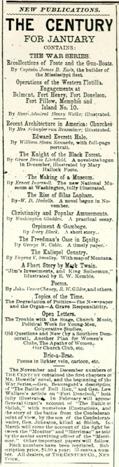
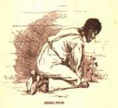
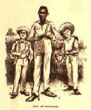

{kind=link}

|
 When MT
and Cable went back on the road after the Christmas recess,
two things were new. Over the break MT had redesigned the
program, so that the central feature of his performance was
a half-hour "reading" from Huckleberry Finn. And
across the country Americans were reading and reacting to
an essay by George Washington Cable that had just appeared
in the January issue of The Century magazine. MT's
new number and Cable's essay shared a common subject --
what Huck refers to, with a blunt crudeness that drives
home its significance, as the "trouble" of "set[ting] a
free nigger free."
Although (as he puts it) Cable was the son and grandson of slaveowners, and had served in the Confederate Army, in his essay -- called "The Freedman's Case in Equity" -- he argues that while the South originally had to dehumanize blacks in order to justify holding them in slavery, it was time now to allow them fully to exercise their rights as freemen. Although the essay is written dispassionately, it immediately made, as Cable wrote his wife from the tour's stop in Milwaukee, "a profound impression." In mid-January, in a brief frontpage story, the New York Tribune reported on Cable's side of the controversy; two days later, in an editorial, the New Orleans Daily Times denounced his comments, and renounced him as "a son of the South." Lead by the Daily Times, newspapers throughout the South condemned Cable and his views about improving the condition of Negroes. The Century, after receiving a torrent of angry letters, published a Southern rebuttal in its April issue. At the same time Cable was deeply moved by the many "noble letters" he received while on the tour from readers who admired his essay; one of these, by an African American in Madison named Arthur B. Lee, was printed along with a response from Cable in The Wisconsin State Journal on 28 January. Cable was also visited before and after several tour performances by people -- "yellow, black, brown," "white men & black men" -- who wanted to express their thanks to him for having written it. Reporters covering the tour frequently interviewed him about his ideas, the Governor of Ohio discussed them with Cable, and as he wrote Louise from Chicago on 17 January, "That paper is turning out to be the greatest thing I have ever done." Throughout the months of January and February, as we can tell from Cable's letters, the various reactions to the essay were part of the daily life of the tour. There is evidence that the controversy around Cable's essay served as valuable publicity for the tour. As far as I've been able to discover, although MT must often have been present while reporters interviewed Cable, none of them ever asked him to comment on the "race problem." Nor can I find any record of how MT felt, either about the essay or about all the attention it was bringing Cable. But we should wonder how his new program played against the background of Cable's plea for just and humane treatment of former slaves. As you can see in the ad for it (above left), the January issue of The Century also included one of the three pre-publication excerpts from Huck Finn -- the minstrel-show conversations between Huck and Jim about "speculatin' in stock" and "King Sollermun" that MT had been using on stage since the beginning of the tour. (And in the Century's version of the text, Jim's only line that threatens the familiar minstrel stereotype -- "I owns myself" -- has been replaced with a much more racially demeaning alternative.) MT kept using these two pieces in several 1885 performances, but the part of Huck Finn that now formed the heart of his performance was usually titled "Huck Finn and Tom Sawyer's Brilliant Achievement." This was a reading version of the novel's last section, in which Tom, knowing that Jim has already been freed, uses him to stage the "Evasion."  The torrent of reponse to Cable's essay reminds us how vital was the issue of the treatment of former slaves at exactly the time MT took Huck Finn on tour. Reconstruction had ended in failure in 1876, and by the mid-1880s Southern states, led by Mississippi, were beginning to create and enforce the Jim Crow system of segregation that would be declared Constitutional in Plessy v. Ferguson in 1896. Cable is writing to protest the mistreatment of African Americans. To modern readers, who are usually uncomfortable with the novel's ending, there is seldom any question that in the "Evasion" Tom mistreats Jim, but all the evidence from the reviews of MT's performances, including what MT himself said about how the piece was received, tells us that contemporary white audiences loved the episode. Jim's sufferings under Tom's administrations served only to make them laugh, uproariously according to all the reports. MT decided that "the episode where Tom & Huck stock Jim's cabin with reptiles, & then set him free," was the "biggest card I've got in my whole repetoire," and even Cable, who regularly reports on the continuous laughter with which audiences responded to it, called it "one of Mark's best things." While Cable's essay begins, "The greatest social problem before the American people to-day is, as it has been for a hundred years, the presence among us of the negro," MT's "Evasion" treats that problem in a way that was bound to be much more popular with most whites at the time. Jim's suffering, either as a slave (as Huck thinks) or as a freeman (as Tom knows), is nothing to take seriously. By performing the "Evasion" episode MT allows his white audience to laugh away the issue of "The Freedman's Case in Equity."  Thus the country's response to this new program can tell us a lot, both about the deepest longings of MT's times, and about the way "Mark Twain" spoke to and tickled those longings. By using the links here you can explore the various parts of this story -- from Cable's essay to the reactions of lecture audiences to Jim's sufferings -- for yourself. [To see all the documents linked from this page, listed by title and source and arranged chronologically, CLICK HERE.] |